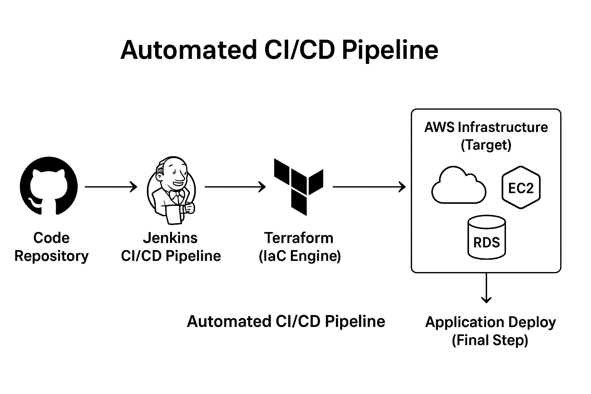

Production-Grade Infrastructure Deployment and Automated CI/CD on AWS
Challenge
The goal was to establish a scalable, secure, and reproducible AWS environment for an application, moving away from manual, error-prone configurations. This required provisioning core components using IaC and setting up a reliable, high-speed release mechanism.
Solution Overview
I developed a scalable AWS infrastructure blueprint using Terraform and implemented a robust, end-to-end Jenkins CI/CD pipeline to automate the deployment process.
- Infrastructure: AWS (EC2, RDS, S3, IAM, VPC)
- IaC: Terraform (Modular Architecture)
- CI/CD: Jenkins, Docker, Maven/Gradle
Architectural Flow
The solution enforces continuous integration and continuous delivery:
- Code is pushed to a Git repository (e.g., GitHub).
- A webhook triggers the Jenkins CI/CD Pipeline.
- Jenkins performs automated Build, Test, and Package steps.
- Jenkins executes Terraform scripts to provision or update the VPC, EC2, and RDS infrastructure on AWS.
- Jenkins performs the final Deployment of the built artifact to the provisioned EC2 instance.
CI/CD Pipeline Architecture Diagram:

Key Responsibilities & Impact
IaC Development with Terraform:
- Architected and provisioned critical AWS components (VPC, Subnets, Security Groups, IAM Roles, EC2, RDS).
- Used Terraform modules to ensure code reusability and maintainability.
- Impact: This modular blueprint cut down manual configuration efforts by up to 80% and enforced security standards from the start.
Jenkins CI/CD Implementation:
- Built a zero-touch CI/CD pipeline in Jenkins that automatically handles the build, test, and deployment phases.
- Integrated Docker for containerizing the application before deployment, guaranteeing quick and reliable software releases.
- Impact: Reduced application deployment time from hours to minutes, achieving a significant boost in release frequency.